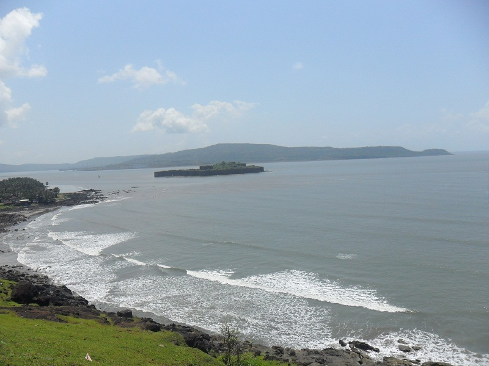
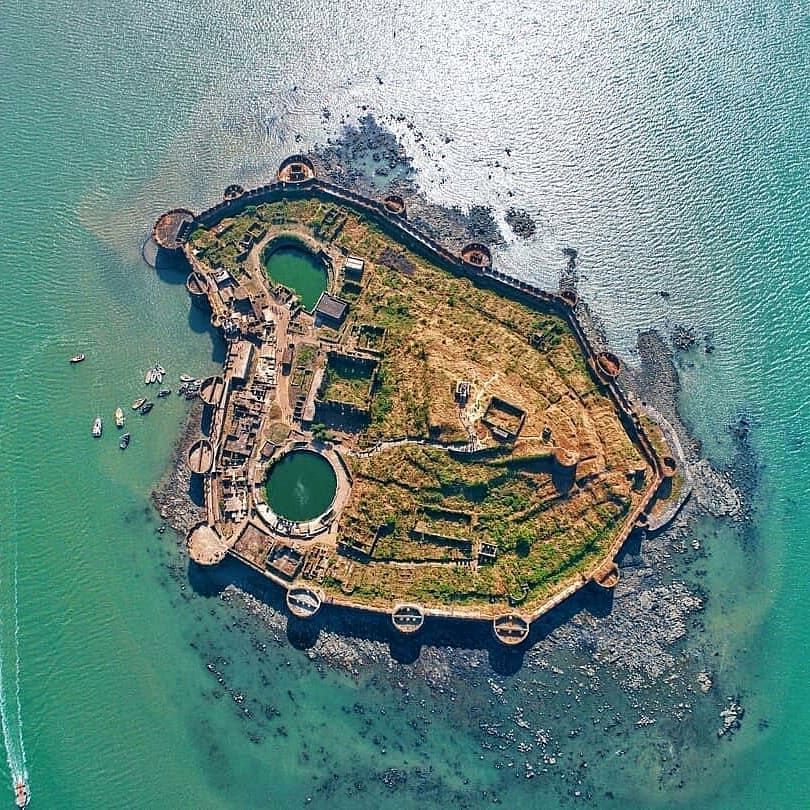
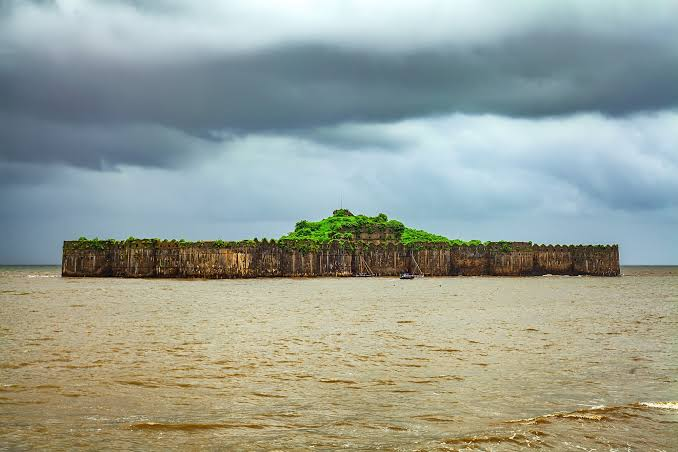

<div class="container-fluid">   
    <div class="row">
        <div class="col-md-12">
            <div class="card bg-dark text-white">
                
                <div class="card-img-overlay">
                  <h5 class="card-title-main">Welcome to Murud!</h5>
                </div>
              </div>
              <div class="p1 mt-2">
                  <p>Murud Beach is a vast expanse of black sand with clear bluish waters stretching almost 1.75 km along the coastline.
                    This is one of the famous beaches of Maharashtra and also one of the top places to visit in Alibaug.
                    The Murud Beach is the charming destination, where stretches of sand is surrounded by hills on three sides.
                    Rocky outcrops flank it to the north and south, while to the east lies the Murud Town and the hills beyond.
                    </p>
              </div>
              <div class="img mb-2">
                  
                  <div class="p2"><p>The view of the sunset is extremely beautiful and the adjoining island forts Janjira and Padmadurgad add to the beauty of the beach.
                    The beach boasts of gentle and soothing breeze round the clock, this helps the tourists have a relaxing time tanning themselves.
                    The beach has watersports and numerous boat trips in the area. This attracts many tourists and water sport lovers to the beach.</p>
                </div>
              </div>
              <div class="img2">
                  <div class="p3">
                      Nearby Special Visits:
                      <h3>Janjira Fort</h3>
                      
                      <h3>Murud-janjira fort is one of the greatest architecture ever built.</h3>
                      
                      <p>At a distance of 5 km from Murud - Janjira Fort and 48 km from Alibaug, Murud Beach is located on the shores of Arabian Sea at Murud
                        in Raigad district of Maharashtra.
                        Each and Every Wall beneath the fort has its own stroy to tell.The fort is a strong example of the greatest bravery battles and sacrifieces.
                        <a href="janjira">To know More About Janjira Click the Link</a>
                    </p>
                  </div>
              </div>
            <a href=" " class="btn btn-primary">Book Destination!</a>
            <a href=" hotel-reservation-murud" class="btn btn-danger ml-4">Reserve Your Stay!</a>
        </div>
    </div>
</div>